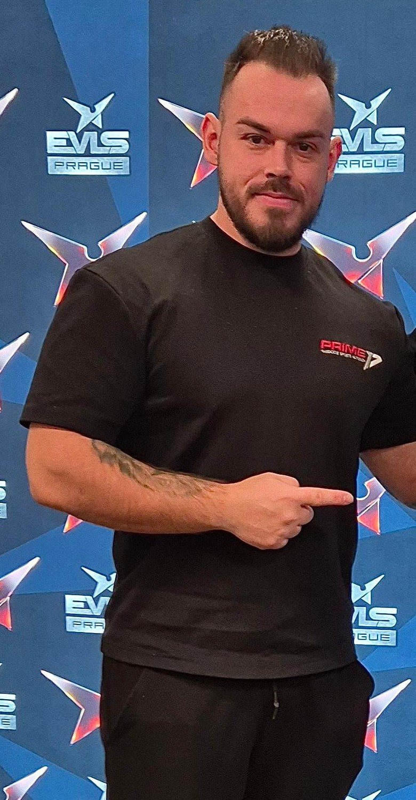
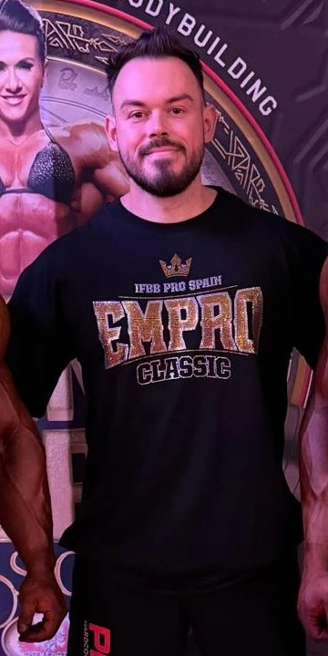
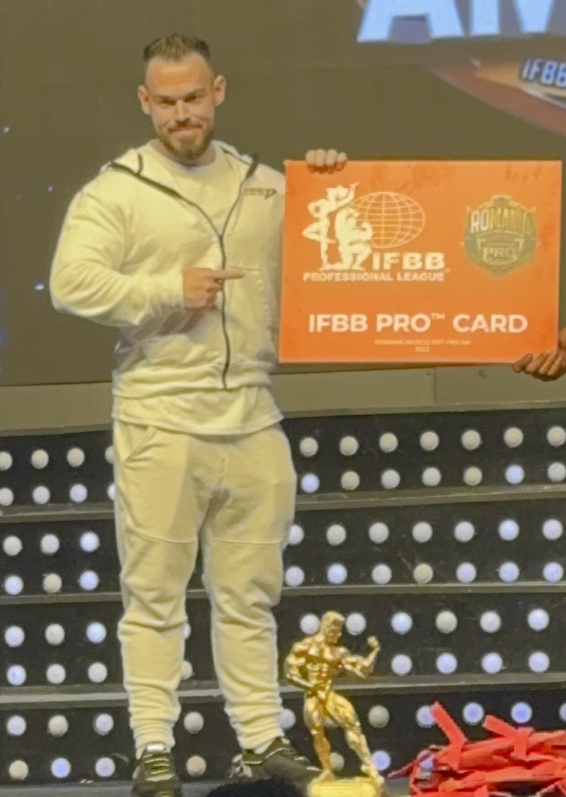
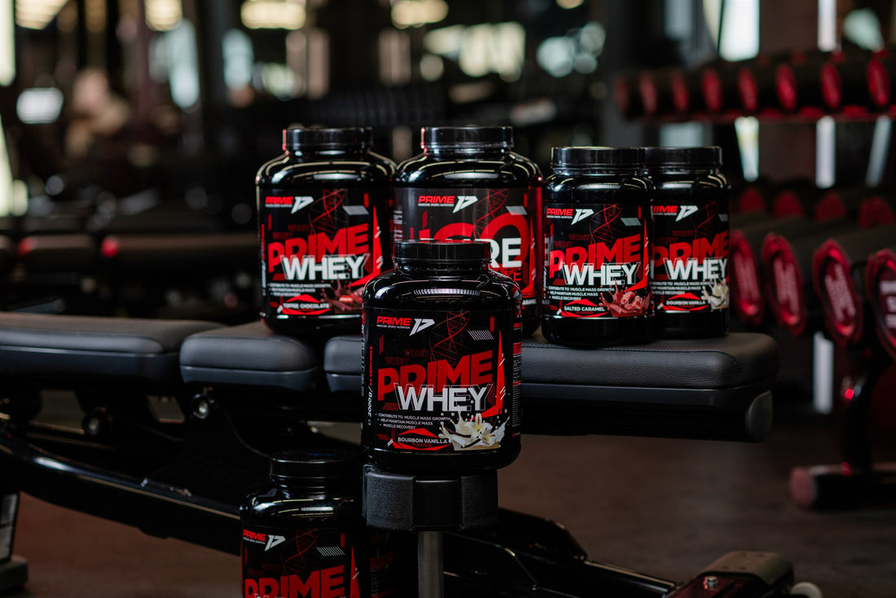
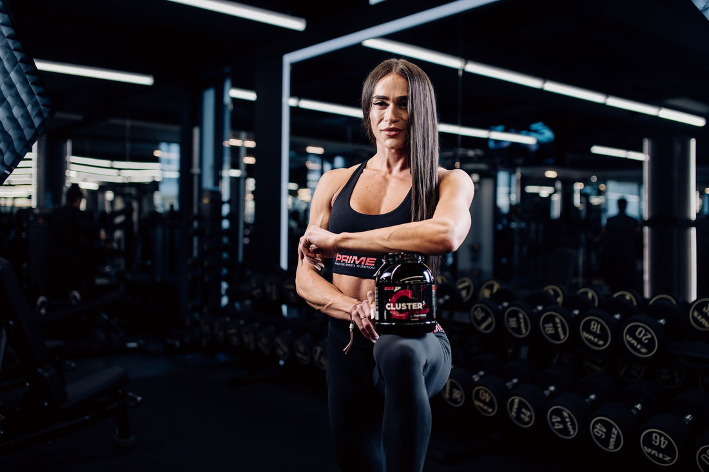
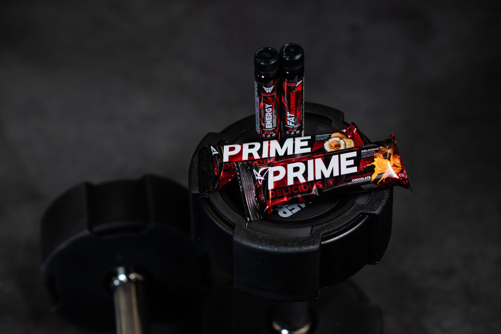

Fondator și CEO · Prime Supplements
Fost sportiv de performanță, antrenor de culturism și omul care a construit Prime Supplements: de la sala din Sibiu la 169 de firme partenere în 31 de județe.
Parcursul sportiv
Marius a crescut în Sibiu și a jucat baschet la juniorii CSU Sibiu în liceu. La 17 ani, în februarie 2009, a intrat pentru prima dată într-o sală de forță, cu în jur de 60 kg. Câțiva ani mai târziu urca pe scenă cu aproape 100 kg de mușchi, iar presa din Sibiu îl numea „Hulk din Sibiu”.
A concurat cinci sezoane, între 2012 și 2016, la nivel național și internațional, pentru Power Gym Mediaș. Pentru Mr. Olympia Amateur 2016 s-a pregătit cu antrenorul elvețian Patrick Tuor și, la primul lui concurs la seniori, a terminat pe locul 2.
| 2012 | Pro Nutrition Grand Prix România juniori 80 kg | locul 10 |
| 2013 | Pro Nutrition Grand Prix România juniori 80 kg | locul 2 |
| 2014 | Campionatul Național de Culturism pentru Juniori +80 kg și open | campion absolut |
| 2014 | Tiger Classic România open seniori 85 kg | campion absolut |
| 2015 | Arnold Amateur Europe culturism juniori | locul 2 |
| 2016 | Mr. Olympia Amateur Spania, Marbella culturism până la 90 kg | locul 2 |
Absolvent al Universității „Lucian Blaga” din Sibiu.


Antrenor de culturism
După anii de concurs, Marius s-a dedicat pregătirii sportivilor. Lucrează cu culturiști și competitoare de fitness la toate nivelurile, de la primul concurs până la etapele internaționale, în sală și online: plan de antrenament, plan alimentar, ajustări săptămânale și pregătirea pentru scenă.
Sportivi pregătiți de el au obținut carduri PRO în organizația NPC (IFBB Pro League), titluri europene și mondiale. Mulți dintre ei sunt astăzi și în echipa de sportivi Prime Supplements.
Este lector la cursurile de instructori din cadrul Federației Române de Culturism și Fitness (FRCF), unde predă viitorilor antrenori bazele pregătirii în culturism și fitness.
Antreprenorul
În 2022 Marius a fondat PRIME SPORT SUPPLEMENTS SRL, la Cisnădie, lângă Sibiu, pornind de la ce cereau zilnic sportivii lui și clienții sălilor. Astăzi Prime Supplements este un brand românesc de nutriție sportivă, cu o echipă care se ocupă de produse, etichete, depozit, livrări și relația cu clienții.



Marius Chera · Fondator și CEO